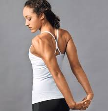

Here are some stretches you can do after working out to relax , have flexibility and save your muscles from injuries and cramps

you can also do some yoga and meditation as a relaxation for your muscles and for your body just sit as this position or this position HOW TO MEDITATE ?
turn on a relaxing song or you can listen to the nature
close your eyes and make sure you feel comfortable
start breathing (inhale and exhale) focus on your breath ,feel it as it enters your body from your nose to the lunges and feel it as it gets out from your body by your nose (do that for like 10 mins)
then focus about your body , feel if you have a pain and check your body from head to toes
start wiggling your fingers and open your eyes
you will feel comfortable and relaxed (trust me it is good for you just try it)